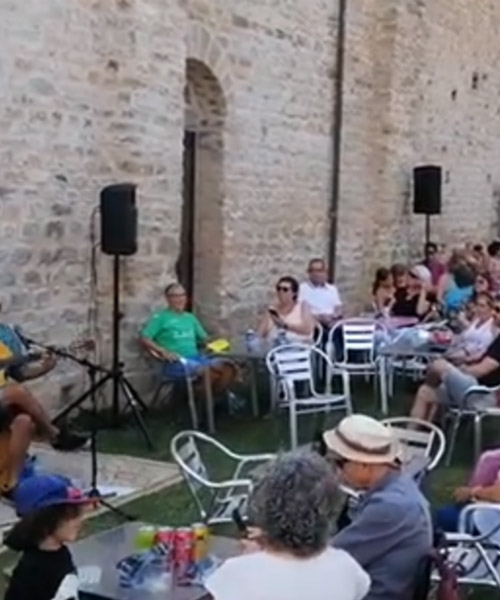
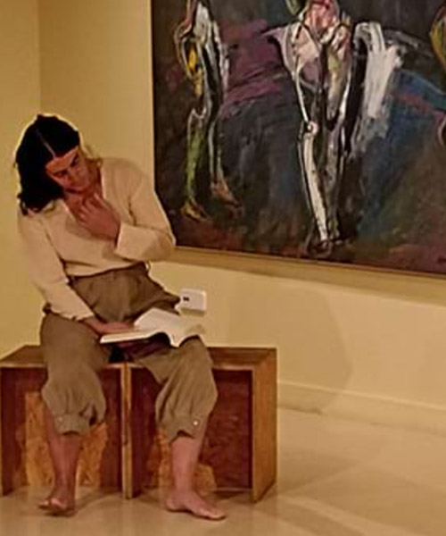

Música
Una selección de actividades que abarcan varios estilos musicales en espacios singulares. Desde el Tastet de Gòspel en el santuario Nuestra Señora de los Munts, en el Lluçanès, hasta el Dúo Tournesol en el monasterio de Sant Llorenç, en el Berguedà, pasando por Palabra Viva, donde la poesía se combina con el canto y la danza


Estas fiestas, sumérgete en el encanto de Aladdín con un musical lleno de aventuras. Descubre cómo un joven ladronzuelo se enamora de la princesa Jasmine y acepta el reto de Jafar: encontrar una lámpara mágica que esconde un genio capaz de hacer realidad todos los deseos.

El cantautor Joan Dausà presenta su Concert de Nadal en un formato íntimo de voz y piano. Este recital especial ofrece una experiencia cercana, en la que Dausà recupera sus orígenes musicales e interpreta sus canciones más conocidas.

Uno de los grandes atractivos del 11º festival MusicalBruc Luces de invierno es el espectáculo "35" de los Spanish Brass, junto con el "Guillermotta" de Jordi Vidal y "Barrocomatik" de Kune Teatre. El concierto Llum, con la Cobla Marinada y el cantaor Pere Martínez, fusionará canciones de protesta con arreglos de jazz.

La violinista Sara Cubarsí presenta las Sonatas de violín de J.S. Bach BWV 1001. Esta obra maestra, considerada entre las más importantes del repertorio para violín solo, será interpretada con su técnica y sensibilidad únicas. Una inmersión en la música profunda y atemporal de Bach.
{kind=link}

¡Un vermut musical con Lab Sons! Un espacio en el que la música en directo se fusiona con los sabores, creando una experiencia que despierta todos los sentidos. Lab Sons, un grupo ecléctico y apasionado por la música afroamericana, interpreta clásicos del jazz, blues, funk y rock’n’roll.

El dúo de flautas traveseras formado por Neus Aznar y Joaquim Ferrer te transportará a través de la historia musical, desde las elegantes líneas del Barroco hasta la pasión del tango. El concierto tiene lugar en la Casa Aymat en el ciclo Cámaras Singulares.

Ven a vivir una experiencia única en el corazón del Lluçanès con el Tastet de Gòspel. En el santuario de Nuestra Señora de los Munts, GospelStory ofrecerá un repertorio lleno de emociones, y conectará alma y tradición a través de sus potentes melodías.

El Dúo Tournesol presenta un concierto de Navidad en el monasterio de Sant Llorenç, con un repertorio que une violín, piano y las voces de Bárbara Wincor y María Pascual. Interpretarán obras de Mozart, Vivaldi, Amy Beach y villancicos tradicionales catalanes e internacionales.

La 54ª edición del Concertàs de Nadal presenta un espectáculo único con La Principal del Llobregat y Montgrins. Dirigido por Marcel Sabaté y Jordi Molina, el concierto cuenta con la percusión de Jaume Yelo y Martí Solivera, los rapsodas Dolors Vives y Maria Rosa Serra, y la voz de Maria Vives.

Despide el año con un concierto único a cargo de la Orquesta de Cámara de Acordeones de Barcelona (OCAB), fundada en 1948. La formación ofrecerá repertorio variado y de alta calidad, con el objetivo de continuar ennobleciendo el acordeón como instrumento clásico.

Esta Navidad, vive una experiencia única con Tributos en Tribu Íntimos: ABBA. Disfruta de un concierto a la luz de las velas, en el que el grupo Tribut ABBA Voices, con más de 15 años de trayectoria, interpreta las canciones más conocidas de la banda sueca.

Neus Borrell (voz) y Mireia de Querol (danza) llevan al escenario Palabra viva, una propuesta donde los versos de Safo, Maria Mercè Marçal, Felícia Fuster y Àngels Moreno cobran nueva vida. Con voz y danza, los poemas se transforman en una acción efímera que conecta con la muestra De l'oblit a la revolta.